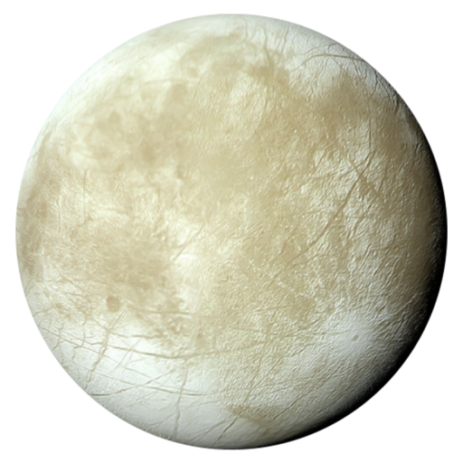

Europa is Jupiter’s fourth largest moon, where it is the smallest of the Galilean moons
which settles within the orbital district of the gas giant. The moon possesses an icy surface which is dominated by
long fractures, ridges, and cracks. After further investigation, it is predicted that Europa possesses a lucious and
deep ocean beneath its surface, making it one of the most habitable places within the solar system. This abundance
of water is caused by the heat waves which interact with the moon’s thick 25 kilometers icy crust, where tidal
flexing allows for the subsurface ocean to remain in a liquid state. This revelation suggests that Europa may
also be a site for human colonization, as if water could be easily extracted to be implemented for rocket fuels,
back-to-back missions to the titanic moon could allow for an efficient travel route for a multiplanetary society.

MOON EVALUATION
DISTANCE TO EARTH
628,000,000 KM
DIAMETER
3,121 KM
OXYGEN LEVEL
0.2%
GRAVITY
1.32 m/s²
DAY LENGTH
3 Earth Days
NASA EUROPA MISSION
EUROPA CLIPPER
NASA’s Europa Clipper Mission aims to thoroughly explore and investigate the
Galilean moon of Europa, preeminently known for its icy surfaces and deep oceans beneath it. Since it is
estimated that Europa’s salty oceans possess more liquid water than all of Earth’s oceans combined, the
continuous effort to examine the signs of life proceed within the aeronautical industry. The primary mission
of measuring the icy moon’s hospitality might just be the first stepping stones of extraterrestrial domination.